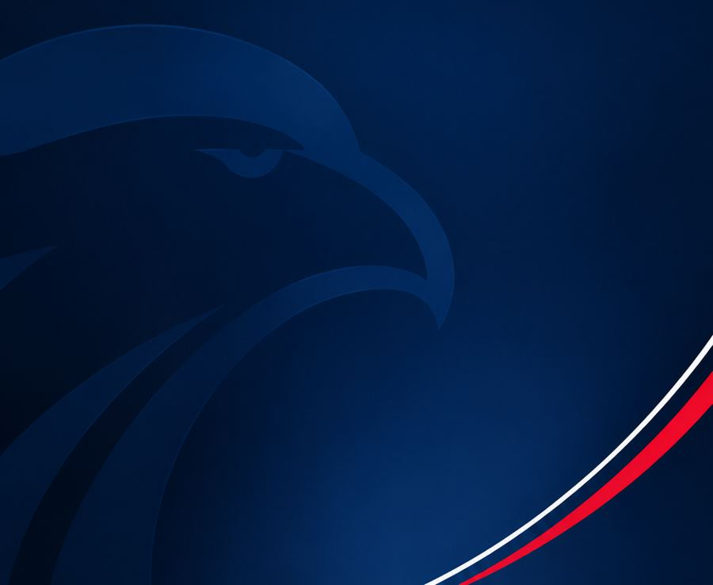
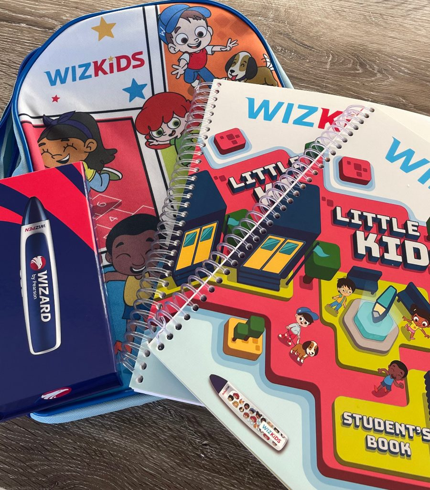
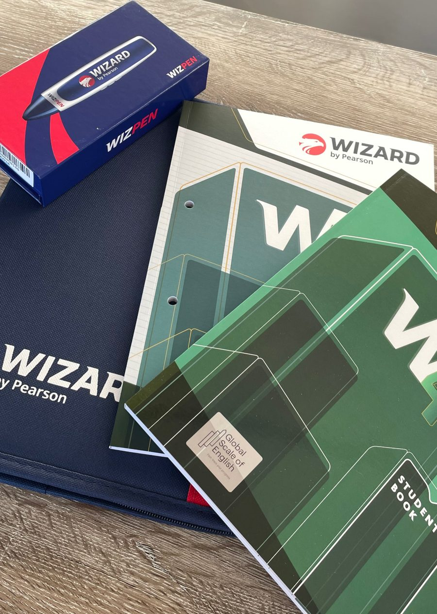
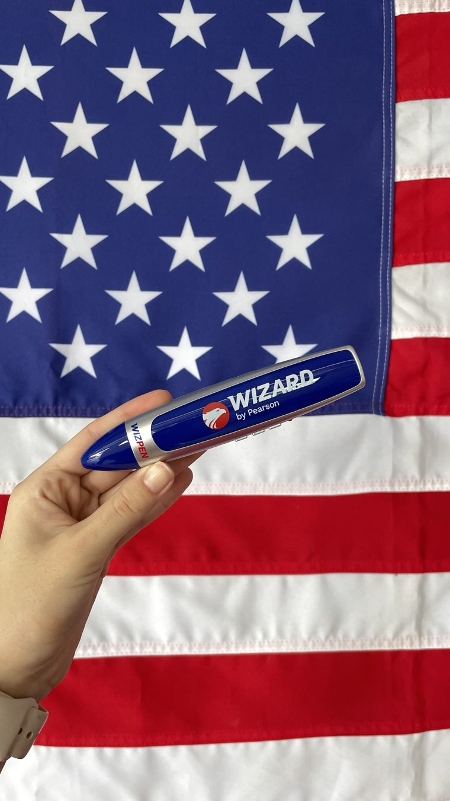
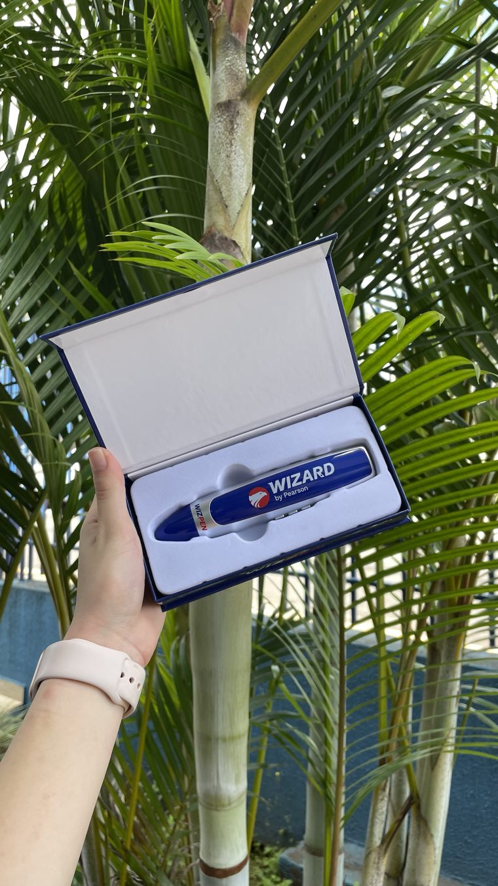

Fale inglês desde a primeira aula.
Turmas de até 6 alunos, a partir de 3 anos. Presencial em Telêmaco Borba ou online para todo o Brasil.
Mensalidades a partir deR$ 263com material incluso
- Método Wizard by Pearson
- Até 6 alunos por turma
- WizPen exclusiva
- Material incluso na mensalidade
Para quem é
Escolha a idade de quem vai estudar
Cada fase tem o seu material e a sua forma de ensinar. Toque na idade para ver como funciona.
Tots
3, 4 e 5 anos · Pré 1, Pré 2 e Pré 3
O primeiro contato com o inglês, do jeito que a criança aprende: brincando. Ela ainda não precisa saber ler.
- Músicas, jogos e atividades em cada aula
- Turmas pequenas, com até 6 crianças
- Dias e horários fixos, com portão eletrônico e tudo fechado durante a aula
Little Kids
6 e 7 anos · 1º e 2º ano
Inglês na fase da alfabetização, com o método FALE: fala, audição, leitura e escrita, de forma natural e divertida.
- 2 aulas de 1 hora por semana, em dias e horários fixos
- Material WizKids com mochila e WizPen
- Turmas de até 6 alunos e professores focados na confiança da criança

Kids
8 e 9 anos · 3º e 4º ano
Aulas dinâmicas, com músicas, jogos e muita conversação. A criança sai de cada aula falando coisas novas em inglês.
- 2 aulas de 1 hora por semana, em dias e horários fixos
- Material WizKids com mochila e WizPen
- Para começar, a criança precisa estar totalmente alfabetizada
Next Generation
10 anos · 5º ano
A ponte entre o inglês infantil e o dos adolescentes, para chegar no Teens com base forte e confiança para falar.
- Conversação em todas as aulas
- Material com WizPen incluso
- Para começar, a criança precisa estar totalmente alfabetizada
Teens
11 a 14 anos · 6º ao 9º ano
Inglês para a escola, para os games, para as séries e para o futuro. Com conversação em todas as aulas, o adolescente perde a vergonha de falar.
- Níveis Teens 2, 4, 6 e 8
- Material com WizPen incluso
- Já estudou inglês? Um teste de nivelamento encontra o nível certo

Adultos
A partir de 15 anos · Ensino médio, faculdade e trabalho
Para quem quer aprender de forma prática e rápida, no ritmo da sua rotina. Mesmo começando do zero, você sai da primeira aula falando coisas novas.
- No presencial, você agenda as aulas quando quiser, com 4 horas de antecedência
- Recomendamos 2 aulas por semana, mas você pode fazer quantas quiser
- Material completo com WizPen e fone de ouvido
Por que a Wizard
Vontade de aprender você já tem. Falta o caminho certo.
Ninguém aprende inglês sem constância, sem prática e sem um caminho para seguir. Na Wizard você tem os três: aulas no seu ritmo, conversação em todas as aulas e um método que vai do básico ao avançado.
“Se você quer aprender inglês de verdade, sem complicação, me chama que eu te ajudo a encontrar a melhor turma para você ou para o seu filho.”Me ajuda a escolher a turma
Metodologia
Aprenda inglês do jeito que você aprendeu o português
A Wizard trabalha com uma metodologia associada à PNL: muita prática e repetição guiada, para o inglês entrar de forma natural e ficar na memória.
Fala
15 a 20 minutos de conversação com o professor em todas as aulas, desde a primeira.
Audição
Você treina o ouvido com o professor, com a plataforma interativa e com a WizPen.
Leitura
O professor acompanha a sua leitura em cada lição, como se tomasse a lição.
Escrita
Livro de tarefas para fazer em casa ou na escola, sempre corrigido pelo professor.
Aprendizado em escadinha
Vocabulário novo a cada duas lições: você aprende numa e treina na seguinte. O conteúdo vai se somando.
Avaliação em toda aula
Sem prova: o professor avalia sua fala, audição, leitura e escrita em cada aula, e você acompanha a sua evolução.
Alunos por turma, no máximo
Turmas pequenas para o professor dar atenção a cada um. Às vezes a aula fica quase particular.
Tecnologia exclusiva
WizPen: um professor particular que cabe no bolso
Patenteada pela WizardEncoste a caneta em uma palavra, frase ou imagem do livro e ela lê para você. Nos momentos de conversação, ela fala, faz uma pausa para você responder e fala de novo.
- Funciona como um leitor: cada palavra e imagem do livro tem um código que ela reconhece
- No começo do livro ela fala mais devagar e, conforme você avança, fala de forma mais natural
- Funciona em todos os livros, do infantil ao adulto, e vem inclusa no material


O que você recebe
Material completo, incluso na mensalidade
Em muitas escolas o material é cobrado à parte. Na Wizard, livros, WizPen e fone de ouvido já estão na mensalidade.
- Livro de lições, para aprender e praticar em aula
- Livro de tarefas, para treinar a escrita e a leitura
- WizPen, a caneta que lê o livro para você
- Fone de ouvido e pasta (mochila no WizKids)
- Ficha de frequência, onde o professor avalia cada aula
Muitas vezes o material tem pronta entrega. Quando precisa ser pedido, chega em cerca de 15 a 20 dias. Aí você faz a Aula Zero, para conhecer tudo, e começa.
WizKids
Por que começar o inglês na infância?
Criança aprende brincando e sem medo de errar. Quanto mais cedo começa, mais natural o inglês fica.
Aulas divertidas
Músicas, jogos e atividades. O inglês vira brincadeira, e a criança sai falando.
Segurança total
Portão eletrônico e tudo fechado enquanto as crianças estão em aula.
Rotina organizada
2 aulas de 1 hora por semana, em dias e horários fixos, com até 6 alunos por turma.
Como estudar
Presencial ou online: a mesma metodologia
Presencial
Telêmaco Borba · todas as idades
- Rua Leopoldo J. M. Voigt, 90, Centro
- Segunda a sexta, das 8h às 21h. Sábado, das 8h às 12h
- Adultos agendam as aulas com 4 horas de antecedência
- Crianças estudam em dias e horários fixos
Online · Wizard On
Todo o Brasil · a partir de 11 anos
- Aulas ao vivo com o teacher e tempo de conversação
- Material completo com WizPen entregue em casa
- Horário fixo, com reposição se precisar faltar
- Suporte da escola de Telêmaco Borba
Descubra em 3 perguntas qual é o melhor para você
Pergunta 1 de 3
Quem vai estudar?
Pergunta 2 de 3
Onde você mora?
Pergunta 3 de 3
Como é a rotina de quem vai estudar?
Para quem trabalha de turno
Sua escala muda toda semana? Seu inglês acompanha.
Turno 6x4, revezamento ou horário que muda toda semana: na Wizard você não fica preso a uma turma fixa.
No presencial, marque a aula com 4 horas de antecedência, de segunda a sábado.
Faça mais aulas na semana de folga e menos na semana puxada. Você controla o ritmo.
No Wizard On, as aulas são ao vivo e você pode repor a aula que perder.
Antes de decidir
Veja como é a aula antes de se matricular
Demonstração online comigo
Numa videochamada rápida, eu te mostro como funciona a aula, o material e a WizPen, e tiro todas as suas dúvidas. Sem compromisso.
Agendar demonstração onlineAula experimental ou nivelamento
Prefere conhecer pessoalmente? Na escola em Telêmaco Borba, os nossos teachers fazem a aula experimental ou o teste de nivelamento, para encontrar o nível certo para você.
Agendar na escolaInglês para todos
Material também em braille
A Wizard tem livros em braille, para que alunos com deficiência visual aprendam inglês com o mesmo método e o mesmo conteúdo da turma.
Quero saber maisQuem estuda conta
O que dizem alunos e famílias
Consigo relembrar bastante coisa e complementar. As aulas estão me ajudando bem!
Ele ficou super animado com as aulas. Gostou muito!
Dúvidas
Perguntas frequentes
Criança de 3 anos aprende inglês mesmo?
Aprende, e com facilidade. Na turma Tots, o inglês entra pela brincadeira: músicas, histórias e atividades. A criança ainda não precisa saber ler.
Em quanto tempo eu começo a falar?
Desde a primeira aula. Em todas as aulas, mesmo no nível básico, há 15 a 20 minutos de conversação com o professor sobre o que você acabou de estudar.
Já estudei inglês. Preciso começar do zero?
Não. Fazemos um teste de nivelamento rápido para pedir o livro do seu nível certinho.
Tem prova?
Não. Você é avaliado em todas as aulas, nos quatro pilares: fala, audição, leitura e escrita. Assim você e o professor acompanham a sua evolução de perto.
Quanto tempo dura o curso?
O contrato é de 12 meses, tempo para concluir um módulo inteiro. Depois você pode se rematricular e seguir para o próximo nível.
O material está incluso?
Sim. Em muitas escolas o material é cobrado à parte, mas na Wizard a mensalidade já inclui os livros, a WizPen e o fone de ouvido. Muitas vezes tem pronta entrega; quando precisa ser pedido, chega em cerca de 15 a 20 dias.
Criança pode fazer o curso online?
O Wizard On é a partir de 11 anos (Teens). Até 10 anos, as aulas são presenciais, na escola em Telêmaco Borba.
E se eu precisar faltar?
No presencial para adultos, você agenda a aula no horário que quiser, então é só remarcar. No online, você pode repor a aula: basta mandar uma mensagem para agendar.
Pronto para começar o inglês?
Inglês que te leva mais longeMe conta quem vai estudar e eu te ajudo a encontrar a melhor turma, presencial ou online.
Acompanhe a escola no Instagram: @wizardtb